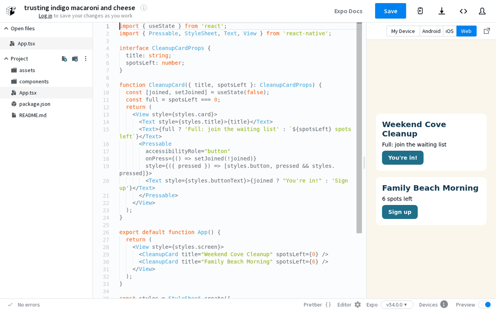

React Native & Expo · Part 1 · Session 1 of 26 · 3 hours
Session 1
How React Native Works and Your Toolchain
Your React, on a phone, and a ready toolchain on every laptop.
Today
Three hours, two lessons
| 0:00 | Welcome, environment check, diagnostic |
| 0:30 | 1.1 How React Native Works: model, demo, lab, Snack |
| 1:20 | Break (10 min) |
| 1:30 | 1.2 Your Toolchain: model, install clinic |
| 2:05 | 1.2 What runs and what checks: demo, lab, project |
| 2:50 | Exit ticket, homework, what to bring next time |
LABS Lab files are in
labs/module-01. Work in starter/, never the solution.Welcome
How this course runs
- 26 sessions of 3 hours, one or two lessons a session
- Part 1 (Sessions 1 to 9): native components, layout, input, lists
- Part 2 (10 to 17): navigation, data, offline, device features
- Part 3 (18 to 26): motion, accessibility, tests, shipping
- In the room: model, demo, lab, project start · At home: 2 to 3 hours
Opening · 12 minutes
Is your computer ready?
- Terminal 1:
cd shoreline-api, thennode server.ts - Terminal 2: in your course folder
shoreline node labs/module-01/l1_0-orientation/check_environment.mjs- Last line
READY? You are a helper now. NOT READY? Pair up: clinic at 1:40
TRIAGE not recognized = new terminal · nothing at :4000 = start the API · no shoreline-crew = create-expo-app
Opening · 8 minutes
Diagnostic: six questions, not graded
- Workbook, Start Here page: D1 to D6
- filter and map · copying with one change ·
?? - narrowing · state read twice · folders and the terminal
- It tells you what to brush up and me what to slow down for
WHY This course assumes React + TypeScript: every one of these comes back.
1.1
How React Native Works
Your React thinking carries over; the platform vocabulary changes.
1.1 · Mental model
One script, two crews
- React writes the plan: who stands where, what each sign says
- On the web, the browser's crew builds it from HTML
- On a phone, Android's or iOS's own crew builds native views
- New vocabulary:
Viewfor div,Textfor p
1.1 · The lesson's code
The CleanupCard: what is new?
function CleanupCard({ title, spotsLeft }: CleanupCardProps) { // ... useState for joined, and full = spotsLeft === 0 return ( <View style={styles.card}> <Text style={styles.title}>{title}</Text> <Text>{full ? 'Full: join the waiting list' : `${spotsLeft} spots left`}</Text> <Pressable accessibilityRole="button" onPress={() => setJoined(!joined)} style={({ pressed }) => [styles.button, pressed && styles.pressed]}> <Text style={styles.buttonText}>{joined ? "You're in!" : 'Sign up'}</Text> </Pressable> </View> ); }
WHY Four new names:
View · Text · Pressable + onPress · StyleSheet.create1.1 · Live demo
What React Native drew
cat outline.txt
<View>
<View>
<Text> "Weekend Cove Cleanup"
<Text> "Full: join the waiting list"
<View role="button">
<Text> "Sign up"
<View>
<Text> "Family Beach Morning"
<Text> "6 spots left"
<View role="button">
<Text> "Sign up"
WHY Jest with React Native's renderer: Views and Texts, no div, no DOM.
1.1 · The web preview
The same card, translated to HTML
<div class="css-g5y9jx r-14lw9ot r-1q9bdsx r-1cmwbt1 r-nsbfu8">
<div dir="auto" class="css-146c3p1 r-1eiytwb r-adyw6z r-vw2c0b">Family Beach Morning</div>
<div dir="auto" class="css-146c3p1">6 spots left</div>
<button role="button" tabindex="0" class="css-g5y9jx r-1loqt21 r-1otgn73 r-k200y r-1eaa16r r-1xfd6ze r-ytbthy r-3pj75a" type="button">
<div dir="auto" class="css-146c3p1 r-jwli3a r-vw2c0b">Sign up</div>
</button>
</div>
…
View→divText→div dir="auto"Pressable→button- On a phone: none of this exists
WHY react-native-web plays the browser's crew. Handy for quick checks, not a phone.
1.1 · Live demo
Loose text: the red screen
npx tsc --noEmit # prints nothing npm test -- src/demo.test.tsx
● the cleanup cards, as React Native draws them Invariant Violation: Text strings must be rendered within a <Text> component. Detected attempt to render "Weekend Cove Cleanup" string within a <View> component.
WATCH Every piece of text sits in a Text. Only running it shows this.
1.1 · Architecture
The New Architecture in plain words
- Hermes: the JavaScript engine inside your app
- JSI: JavaScript calls native code directly
- Fabric: the renderer that makes native views
- Native modules: camera, location, secure storage
WATCH "The bridge" is the old design: when a tutorial blames it, check its date.
1.1 · Carries over
What you already know, and what is new
- Components, props, hooks
- TypeScript, your types
- TanStack Query, Zustand, RHF + Zod
- The API and its JSON
- Core components, StyleSheet
- Virtualized lists, no URL bar
- localhost is the phone
- Permissions, notches, stores
1.1 · Expo
The framework around React Native
- The CLI (
npx expo …) and the SDK (SDK 58) - Expo Router: navigation from files
- Expo Go: runs your project on your phone while you develop
- Development builds: your own Expo Go, with your native modules
- EAS: cloud builds (iOS without a Mac), updates, submissions
1.1 · Guided lab · 15 minutes
React Native's building blocks, tested
labs/module-01/l1_1-how-react-native-works/starternpm test: four failures. Read the first one from the top- Task 1: the site's name in a
Text, role header - Done:
Tests: 4 passed, 4 total
MORE Finished? Task 2 (
onPress, not onClick), Task 3 (1 spot left).1.1 · Project
Your first native component, in Snack

PROJECT Steps 4 to 6 at home: compare, map six screens, install Expo Go.
10
Break
Back at 1:30. NOT READY machines: install clinic right after.
1.2
Your Toolchain
Base camp and the meeting point.
1.2 · Mental model
Base camp and the meeting point
- Metro: the supply tent, packs your code as one bundle
- The QR code: the meeting point, where base camp is
- Expo Go: the volunteer who picks up the bundle
- Can't connect? Camp closed · wrong address · a fence
RULE Two terminals: the API (
:4000) and Metro (:8081). API first.1.2 · Three ways to run
Expo Go, an emulator, the web preview
- Expo Go on your phone: the real thing (the course default)
- Emulator or simulator: optional; the iOS one needs a Mac
- Web preview: layout, text, data; no camera, no permissions
- Expo Go or the web preview: either one finishes the lesson
1.2 · Install clinic · 25 minutes
Fix by problem
- Node missing or too old: the LTS, then a NEW terminal
- No API: unzip into
shoreline,node server.ts - No project:
npx create-expo-app@latest shoreline-crew - Phone can't connect: the checklist, else the web preview
- Done = the check says
READY
1.2 · Live demo
Which Node?
node --version npm --version
v24.22.2 11.19.1
WHY 24 or higher counts. Not recognized? A new terminal.
1.2 · Live demo
The API answers
http://localhost:4000/api/events?when=upcoming&perPage=2
[
{
"id": "e17",
"title": "Tide Pool Morning Cleanup",
"siteId": "otter-creek",
"capacity": 12,
"spotsTaken": 7
},
…
WHY Trimmed to five fields. Dates move with today.
1.2 · Live demo
npx expo start
npx expo start
› Scan the QR code above to open in Expo Go. › Metro: exp://192.168.1.42:8081 › Web: http://localhost:8081 › Using Expo Go › Press a │ open Android › Press w │ open web › Press r │ reload app › Press m │ toggle menu
WHY The QR code (left out) holds the exp:// address. Press w for the web preview.
1.2 · The project's code
The first screen, from the lesson's files
shoreline-crew/src/app/index.tsx
export default function Index() { return ( <View style={styles.container}> <Text accessibilityRole="header" style={styles.title}> Shoreline Crew </Text> <Text style={styles.tagline}>Many hands, cleaner sands.</Text> </View> ); }
WHY
accessibilityRole="header" is the native <h1>.1.2 · Project
The first screen

1.2 · Live demo
A typo the phone ignores
styles.tagLineinstead ofstyles.tagline- Metro bundles it; Fast Refresh shows it
- The tagline silently loses its size and color
- Only
npx tsc --noEmitnames it
WATCH Metro removes the types without checking them.
1.2 · Live demo
npx tsc --noEmit
src/app/index.tsx:9:27 - error TS2551: Property 'tagLine' does not exist on type 'Readonly<{ … }>'. Did you mean 'tagline'?
9 <Text style={styles.tagLine}>Many hands, cleaner sands.</Text>
~~~~~~~
Found 1 error in src/app/index.tsx:9
WHY Where · the code · the message with Did you mean · the squiggle
1.2 · Before any task is done
Lint and type check: silence is success
npx expo lint npx tsc --noEmit
- Clean: both print nothing at all
- First
npx expo lint: answer y, then run it again - Never
npm audit fix --force
RULE The project's own AGENTS.md asks for both.
1.2 · Predict, then check
A site the API does not have
http://localhost:4000/api/sites/seal-rock
- Which status code?
- What does the body say?
- Then: ?_status=500 on /api/events
1.2 · Guided lab · 15 minutes
What runs it, what checks it
labs/module-01/l1_2-your-toolchain/starter(no install)- Task 1: a test and
npm run typecheckfind the style typo - Task 2: green tests, red
npm run lint: a hook after an early return - Done: 4 passed, and both checks silent
MORE Finished?
debug_upcoming.ts: two bugs, and tsc finds the second.Wrap-up · 4 minutes
Exit ticket
- What does a
<View>become on a phone, and why no DOM? - A style typo, no error in the app: which tool tells you, and why not the app?
- Your two terminals: where, and what runs in each?
WHY No notes. Workbook Exit Ticket box or a sticky note on the way out.
Before Session 2
Homework and bring list
- Finish both projects; exercises; both quizzes; both journals
- Labs: the remaining tasks, the debug handout
- Not READY yet? Follow your plan, run the check, email me its last line
- Bring: the course folder, your phone, HQ's code if you have it
NEXT Session 2: From the HQ to the Phone.